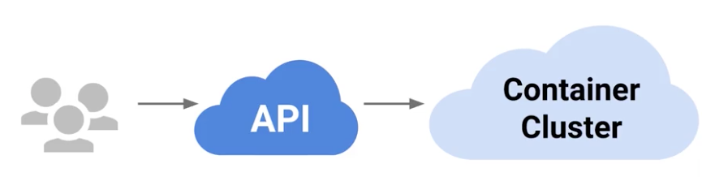
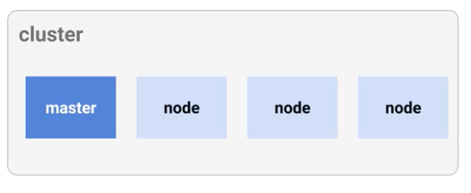
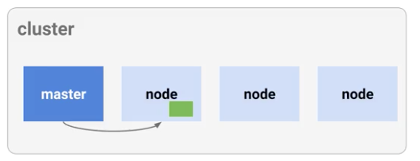
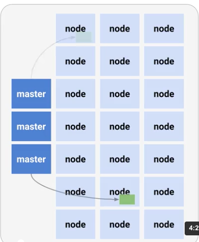
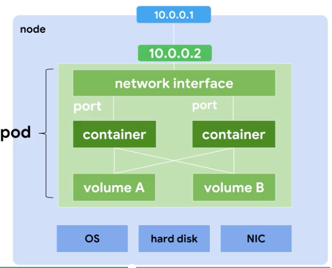
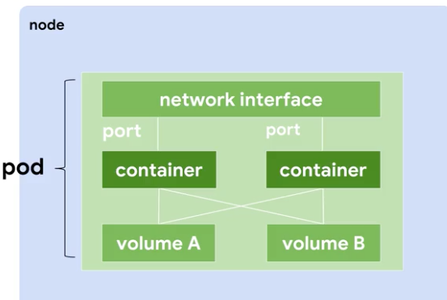
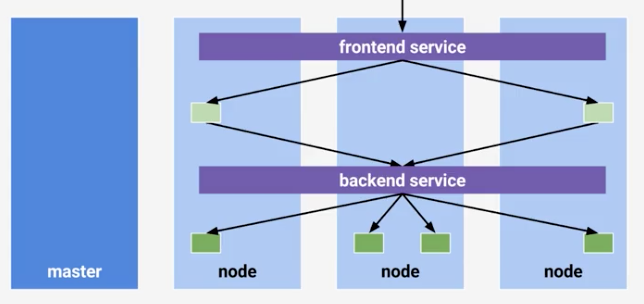
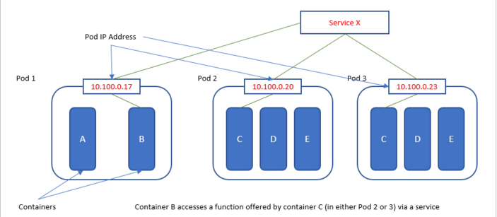
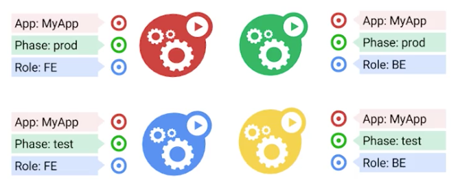

서비스 소개
서비스.
유저들은 외부로 오픈된 API에 접근해 서비스를 사용한다. 이 API를 클러스터가 제공한다고 가정하자. (1)
클러스터란?
클러스터는 컴퓨터의 집합을 의미한다. 여기서 노드는 한개의 컴퓨터 라고 가정하자. 그러면 위의 클러스터는 여러개의 노드와 한개의 마스터로 이루어졌다고 가정 할 수 있다.
(2)
서비스 제공
유저가 특정 API를 호출했다고 가정해보자. 그러면 클러스터에 요청이 들어오고 마스터가 해당 요청을 특정노드에서 처리하게 명령한다.
(3)
실제
클러스터는 부하 분산과 장애 극복을 위해 여러 마스터와 여러 노드로 이루어 진다.  (5)
결론
위의 서비스를 배포, 유지, 스케일링 하는 방법이 필요하다.
쿠버네티스
그리스어로 한곳의 장이라는 의미를 가진다.
역활
- 배포
- 유지
- 스케일링
핵심 구성요소
Node
- 컴퓨터또는 VM이라고 생각 할 수 있음.
- 노드는 OS, 하드디스크, 네트워크 인터페이스를 가지고 있음.
- 노드 안에는 여러개의 pod 이 존재
(5)
Pods
- 논리적 호스트의 느낌
- 네트워크와 저장소를 공유함.
- 여러개의 컨테이너를 실행 시킬 수 있음
- 스케줄의 기본 단위
(4)
Service
- 서버와 디비로 구현된 2 단계 앱을 생각해보자.
- 분산을 위해 여러개의 서버와 여러개의 디비로 이루어졌다.
- 서버들을 논리적으로 프론트 서비스라고 묶고 디비들을 논리적으로 백서비스라고 묶자.
- 이제 유저가 요청하면 프론트 서비스로가고 해당 서비스는 특정 규칙에 맞춰 각 폿으로 요청을 할당한다.
- 프론트 서비스에서 디비에 요청 할 때도 직접이 아니라 백서비스에 요청을 한다면 한번더 분산을 할 수 있다.
- 위와 같은 그룹 정의를 서비스라고 칭하자.
- 정의하면 함께 동작하는 폿 집합
(5)
- Volumns
- 영속 저장소를 컨테이너에 맵핑 할 수 있음
- Namespace
- 자원을 관리를 위해 파티셔닝 할때 사용.
- Kublet
- 쿠버네티스 관리 대리인

정의
Pods
apiVersion: v1
kind: Pod
metadata:
name: my-app
spec:
containters:
- name: my-app
image: my-img
- name: my-nginx
image: nginx
ports:
- containerPort: 80
- containerPort: 443
Service
kind: Service
apiVersion: v1
metadata:
name: frontend
sepc:
ports:
- name: http
port: 80
targetPort: 80
protocol: TCP
selector:
role: FE
type: LoadBlalancer
분류 방법
- 팟에는 레이블을 줄 수 있음 key:value 이며 복수개로 줄 수 있음
- role: FE, role: BE 처럼 마음대로 구분 할 수 있음 
실행
위의 yaml 파일을 master 에게 주면 마스터가 노드가 yaml에 따라 동작한다.